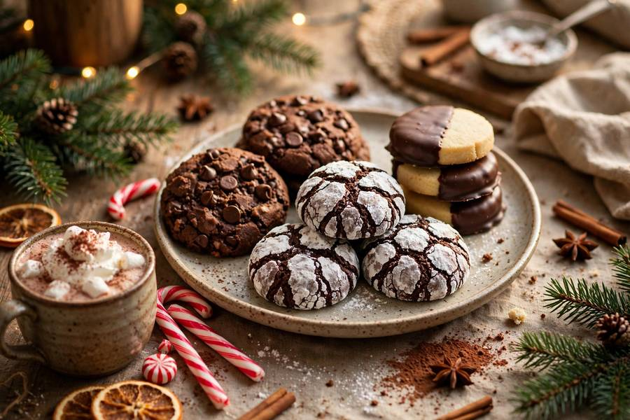
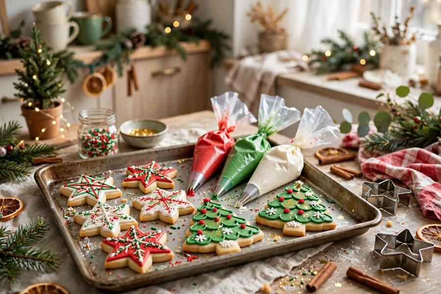

30+ Christmas Cookie Recipes Everyone Will Love
📌 Save to PinterestChristmas cookies are the best part of holiday baking: the kitchen smells like cinnamon and butter, the trays come out golden, and everyone has a favorite. This roundup gathers thirty cookie recipes that everyone will love — the classics your grandmother made, rich chocolate cookies, warm spiced gingerbread, filled sandwich cookies, and the decorated ones that look like they came from a bakery. Bake one batch or bake them all; either way, the cookie jar will not stay full for long.
How to pick your Christmas cookies
Pick a mix, not a single style: a crisp cookie, a soft cookie, a chocolate cookie, and a spiced cookie cover every taste. If you are baking with kids, choose cut-outs and decorated cookies — they are the most fun to make. If you are gifting, choose cookies that travel well and keep for days, like shortbread, biscotti-style bakes, and sturdy gingerbread. And if you are short on time, pick drop cookies and bars over rolled and cut cookies — they bake faster and still taste like Christmas.
Good to know: Everything is written in American English, and measurements use US customary units — cups, tablespoons, and Fahrenheit — for cooks in the United States. Always follow safe food-handling guidance, and check labels for allergens when baking for others.
Classic Christmas cookies
These are the cookies most people picture when they think of Christmas baking — the ones that have been on the table for generations.
1. Classic Sugar Cookies
Soft in the middle, lightly crisp at the edges, and made for decorating. Roll them out, cut them into trees and stars, and let everyone ice their own.
2. Snickerdoodles
Soft, chewy cookies rolled in cinnamon sugar with a crackled top. They taste like a hug and they are impossible to eat just one of.
3. Buttery Shortbread
Rich, crumbly shortbread made with real butter — the simplest cookie on this list and one of the best. It keeps for days and travels beautifully.
4. Gingerbread Men
The cookie that defines Christmas baking: spiced, sturdy, and made for decorating with icing smiles and candy buttons. Kids love them most of all.
5. Classic Butter Cookies
Delicate piped butter cookies that melt in your mouth. They look like they came from a bakery tin and they disappear just as fast.
6. Spritz Cookies
Buttery pressed cookies in festive shapes — trees, wreaths, and snowflakes. A cookie press makes them fast, and colored sugar makes them pretty.
Chocolate cookies
For the chocolate lovers at the table — rich, fudgy, and best eaten warm from the oven.
7. Chocolate Crinkle Cookies
Deep chocolate cookies rolled in powdered sugar so they crackle like snow as they bake. They look like winter and taste like brownies.
8. Double Chocolate Chip Cookies
Soft, dark, and loaded with chocolate chips. The edges go crisp while the centers stay gooey — the way a chocolate cookie should be.
9. Chocolate Peppermint Cookies
Rich chocolate cookies with a cool peppermint finish and crushed candy cane on top. They taste like Christmas in a cookie.
10. Brownie Cookies
All the fudgy richness of a brownie in a cookie shape, with a shiny crackled top. Serve them warm with a glass of cold milk.
11. Chocolate-Dipped Shortbread
Buttery shortbread fingers dipped in dark chocolate and finished with a sprinkle of sea salt. Simple, elegant, and made for gifting.
12. Hot Cocoa Cookies
Chocolate cookies topped with a soft marshmallow that melts into the top as they bake. They taste exactly like a mug of hot cocoa.

Spiced & gingerbread cookies
Warm spices are the flavor of Christmas — these cookies fill the whole house with that smell.
13. Soft Gingerbread Cookies
Thick, soft gingerbread with a deep molasses flavor and a gentle spice. They stay soft for days, which makes them perfect for cookie boxes.
14. Molasses Cookies
Chewy, dark, and richly spiced, with a crackled sugar top. They are the cookie to bake when you want the house to smell like the holidays.
15. Chai-Spiced Cookies
All the warm spices of a chai latte — cinnamon, cardamom, ginger, and clove — folded into a soft cookie. A modern classic.
16. Cinnamon Stars
Star-shaped almond cookies with a crisp meringue top and a warm cinnamon flavor. They are a European Christmas tradition for a reason.
17. Pfeffernüsse
Small, spicy German cookies dusted in powdered sugar, with black pepper and warm spices in the dough. They keep for weeks and taste better with age.
18. Cardamom Shortbread
Buttery shortbread with a fragrant cardamom twist. It is the quiet, elegant cookie on the tray — and the one adults reach for first.
Filled & sandwich cookies
Two cookies are better than one — especially when something sweet is hiding in the middle.
19. Jam Thumbprints
Buttery cookies with a thumbprint of jam in the center — raspberry, strawberry, or apricot. They look like little jewels on the tray.
20. Linzer Cookies
Delicate almond cookies sandwiched with raspberry jam, the top one cut with a window so the jam shows through. They are the prettiest cookie on this list.
21. Peanut Butter Blossoms
Soft peanut butter cookies topped with a chocolate kiss that melts slightly into the top. A cookie-jar classic that kids and adults both love.
22. Chocolate Sandwich Cookies
Crisp chocolate cookies with a sweet cream filling — the homemade version of a beloved classic, only better.
23. Raspberry Almond Cookies
Almond cookies with a bright raspberry filling and a dusting of sugar. Tart, nutty, and elegant enough for a holiday table.
24. Hazelnut-Stuffed Cookies
Soft cookies wrapped around a creamy hazelnut center. They taste like the famous chocolate-hazelnut spread, in cookie form.
Decorated & festive cookies
These are the showpieces — the cookies that look as good as they taste and make the whole tray look like a celebration.
25. Royal Icing Sugar Cookies
Crisp sugar cookies covered in smooth royal icing and decorated with sprinkles. They take patience, and they are worth every minute.
26. Candy Cane Cookies
Red and white striped cookies twisted into candy cane shapes. They are fun to make, fun to eat, and they look like Christmas.
27. Christmas Tree Cookies
Tree-shaped cookies iced in green with candy ornaments. Let the kids decorate their own — no two trees will look alike.
28. Snowball Cookies
Buttery nut cookies rolled in powdered sugar until they look like little snowballs. They melt in your mouth and they are gone in seconds.
29. Stained-Glass Cookies
Spiced cookies with a window of melted candy in the center that glows like stained glass. Hang them on the tree or eat them straight from the tray.
30. Meringue Kisses
Light, crisp meringue kisses swirled with red and green. They are sweet, airy, and the lightest cookie on the tray.

Baking & storage tips
Chill your dough before baking — it keeps cookies from spreading and makes cut-outs hold their shape. Bake one tray at a time in the center of the oven, and let cookies cool on the tray for a few minutes before moving them so they set. Store crisp cookies and soft cookies in separate containers, or the crisp ones will go soft. Most Christmas cookies keep for a week in an airtight container, and most doughs freeze well — so you can bake in batches across December and always have fresh cookies ready.
Keep exploring
- Browse the Desserts & Baking roundups — cookies, cakes, pies and sweet bakes.
- Browse all six categories — breakfast, lunch and dinner, desserts, air fryer, healthy recipes, and appetizers.
- More about the kitchen — what The Tasty Recipe Co is and how it works.
About the Editorial Team: This article was created by the editorial team behind The Tasty Recipe Co. The site publishes recipe roundups for home cooks, one at a time, with each article checked live before the next one begins. Learn more on our About page.
Recipe results can vary with ingredients, equipment, and technique. See our Disclaimer for food-safety and allergy notes.